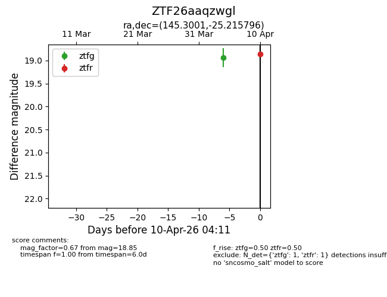
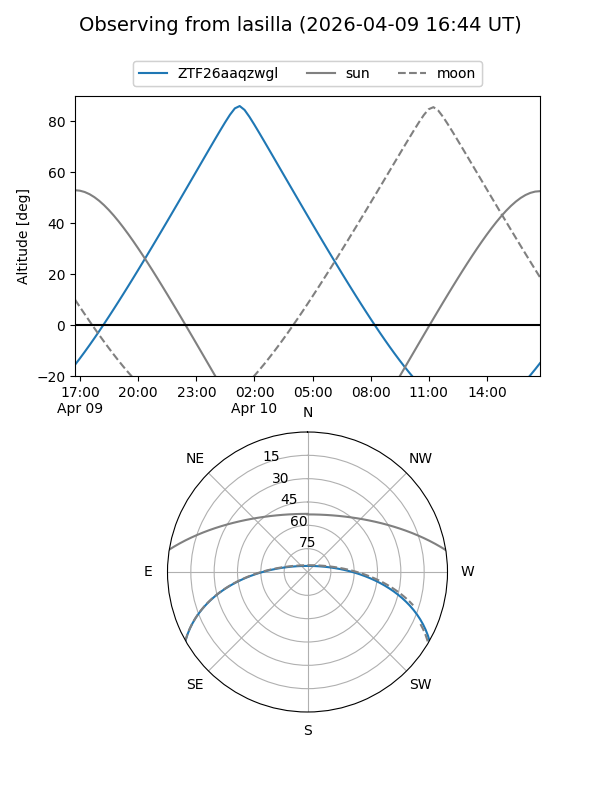
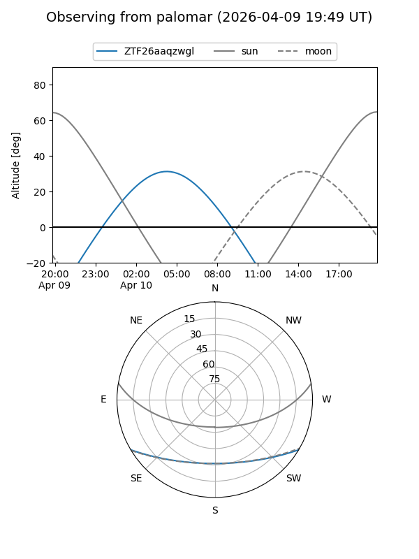

ZTF26aaqzwgl
Target ZTF26aaqzwgl at 2026-04-10 04:17
Aliases and brokers:
FINK: link
Lasair: link
ALeRCE: link
alt names
ZTF26aaqzwgl (ztf,fink_ztf)
Coordinates:
equatorial (ra, dec) = 145.3001,-25.21580
equatorial (HMS+DMS) = 09:41:12.01,-25:12:56.87
galactic (l, b) = (257.4949,+20.43191)
Flags:
Photometry:
last ztfg=18.94, ztfr=18.85
1 ztfg, 1 ztfr detections
Lightcurve

Visibility


Additional plots